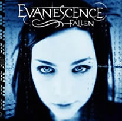
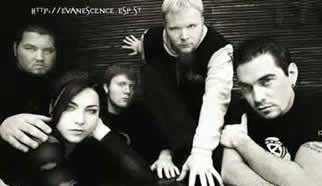

Entrevista de Amy Lee à Tim Cashmere - Undercover.com - 2004
Vamos primeiro falar sobre o Fallen, que no ano passado foi o 4º lugar em vendas nos EUA, com vendas de 3 milhões e meio de unidades, e eu acredito que esteja com cerca de 7 milhões no mundo todo... Isso é incrível. Mas ainda não chegou a 7 milhões...
Como isso a faz sentir? Me faz sentir como se eu tivesse feito um bom trabalho. Me faz sentir feliz pois muitas pessoas gostam da nossa música. Eu nunca pensei em fazer sucesso pelo mundo todo. As pessoas me perguntam por que eu não estou pulando toda animada, do tipo "Sou milionária!", mas não é bem assim. Eu apenas queria fazer música, então eu estou feliz.
A última vez que você esteve aqui (Austrália), você disse que você nunca é reconhecida nas ruas. Isso ainda acontece? Um pouco mais do que eu estava acostumava. Acho que ano passado eu estive aqui em junho... por ai, e agora estou certamente sendo mais reconhecida nas ruas. Não chega ao ponto de eu não conseguir sair em público; nunca estará nesse ponto, simplesmente porque eu não sou um ícone pop ou uma atriz ou algo assim... Pelo menos espero, ou eu iria odiar a vida. É legal quando você conhece um fã, assina um autógrafo e eles respeitam sua música e seu trabalho. É um elogio, mas eu não uso maquiagem normalmente ou qualquer coisa e eu continuo saindo por ai esperando não ser reconhecida, e as pessoas querem tirar minha foto e colocar na Internet ou algo assim e eu fico "Por favor não tire uma foto minha!".
Você foi mencionada por dizer que o Evanescence costumava ser somente você e Ben e um monte de outros caras e agora você está trabalhando como uma união. Como assim? Bom, eu acho que é importante para uma banda que todos se sintam como se eles tivessem investido seus corações no projeto. Antes, o que aconteceu era que os caras foram trazidos à banda depois que ela já estava formada, então não era como se eles tivessem seu coração nela. Nós os ensinamos como tocar e eles tocaram. Especialmente com o Ben era um regime rígido, você tinha de fazer tudo se encaixar perfeitamente e eu não acredito nisso. Eu acredito no coração da música, isso é o que a música deve ser. Não é para ser ditada de uma forma, é para ser do seu coração. É para ser sobre sentimento e todos serem capazes de levá-la do seu próprio jeito e eles entendem que nossa banda é para isso. Não é como se eles fossem tentar fazer country ou algo assim. Nosso novo guitarrista, Terry Balsamo, está trazendo outro elemento para a banda e isso é muito bonito e maravilhoso. Também temos a chance de passar por algo juntos, a perda do "grande membro principal". Também estamos compondo juntos e todos sentem como se tivessem a chance de estar numa banda de verdade, não apenas como um músico contratado.
Da última vez, o Ben compôs um pouco do álbum, então com o próximo álbum terá um grande efeito em como as músicas são escritas? Terá um grande efeito. Eu acho que o álbum será bem melhor!
Isso significa que você não está feliz com esse? É só que eu amadureci com ele. Eu acho difícil às vezes cantar as mesmas músicas que foram escritas quando eu tinha 16, 17, 18 anos, já que desde então, muita coisa aconteceu comigo e eu sou uma pessoa diferente agora. Você cresce, muda e tem sentimentos diferentes. É difícil, cantar, lembrando do tão vulnerável que me sentia quando escrevi essas músicas, e agora sinto que não quero mais ser vulnerável. Eu quero ser mais forte que isso. Então eu estou definitivamente pronta para compor sobre esses sentimentos mais maduros que eu tenho e as coisas que passei. Eu quero falar! Não quero mais, ficar silenciosa!
Você tem alguma música pronta para o próximo álbum? Sim, algumas. Não muitas. Precisamos nos concentrar nisso. Temos muitos pedaços e conceitos e planos e coisas; então quando encerrarmos a turnê, reuniremos tudo. Encerraremos no final de fevereiro ou começo de março, então iremos finalmente começá-lo.
Então assim que você terminar, já está de volta. Sem descanso! Verdade. É que eu tenho tanta coisa sendo construída em mim que eu quero escrever sobre isso. É como se eu fosse explodir, caso não colocasse no papel. É o período mais longo que eu passei na minha vida sem escrever. Eu sempre fui uma compositora, antes, durante e depois de Ben. Não tem nada a ver com o Ben, o Ben não compôs o álbum, fizemos isso juntos. Então se eu não transformar isso em músicas, me sinto muito vazia.
Você não consegue compor enquanto está em turnê? Pense sobre isso, ok? Na noite passada tivemos um show, e assim que cheguei em casa fui para a cama, juro! Nenhuma bebida! Fui para a cama lá pela 1h da manhã, acordei às 6:45h. Não é muito tempo de sono para uma noite. Então eu levantei e entrei num avião e fui para a próxima cidade, uma hora depois que eu cheguei no hotel, eu dei entrevistas por 3 horas. Quando acabaram as entrevistas eu chequei o som, o que significa que entre a checagem de som e o show eu tenho apenas 3 ou 4 horas para descansar e comer. O único momento que eu poderia compor algo seria durante essas 3 horas, que são no meio do dia. É como me forçar a compor quando eu não estou a fim, eu só estou a fim de dormir, entende? É um período muito difícil. Numa ou outra vez quando tenho folga, ainda consigo, como outro dia que eu finalmente escrevi uma que já estava na minha cabeça algum tempo, mas compor em turnê é virtualmente impossível, especialmente quando as datas são tão próximas.
Amanhã deve ser um pouco pior para você, porque o vôo é de 5 horas para Perth. Não será tão ruim para mim, quanto a acordar cedo, porque empacotamos tudo lá pelas 8 da manhã e já estamos saindo; é um vôo de 4 ou 5 horas. Depois temos de fazer tudo isso antes do almoço e ainda ter tempo para a checagem do som.
Provavelmente você estará tocando às 4 da manhã? Nunca se sabe. Os shows aqui são mais cedo do que nos EUA, para a gente pelo menos.
Não seria, se vocês tocassem num clube. Temos tocado às 9:30h. Nós costumávamos tocar às 10:30h ou 11h. Eu achava que vocês eram festeiros, o que acontece?
E sobre esses rumores de você e Wes Borland trabalhando juntos? Bom, Wes Borland e eu somos amigos e nós realmente trabalhamos juntos, ele e eu e Danny Lohner (Nine Inch Nails, Rob Zombie, David Bowie) na trilha sonora do Underworld, mas devido a advogados e empresários e toda essa droga legal, não puderam usar meu vocal, o que é uma pena porque fizemos um ótimo trabalho de composição. Quando Ben saiu da banda, nós discutimos sobre ele (Wes) compor algo comigo no próximo álbum, o que eu acho que poderia ser bem legal, mas acho mais importante compor com minha banda. Eu adoraria experimentar e me divertir por ai, seria maravilhoso, mas definitivamente o mais importante é compor com a banda.
Existirá um álbum solo da Amy Lee? Não sei. Eu acho que não, mas não posso dizer isso, é difícil. Eu acho que depois que o Evanescence acabar, eu já terei o bastante no meio musical.
Terry (Cold) está na guitarra agora. Como ele está indo? Melhor do que eu jamais esperei, já que eu o conhecia, mas não tão bem que eu pudesse dizer que fossemos ótimos amigos. Eu sabia que podia contar com ele e tem sido um grande alívio; é como uma coisa em um milhão de possibilidades que aconteceu tão naturalmente. Terry é um guitarrista insano com uma presença de palco maravilhosa. Ele tem uma boa personalidade, é "pé-no-chão" e acima de tudo é um ótimo compositor. Eu realmente não sabia disso, quando o trouxe para a banda, então o Terry foi uma das melhores decisões que eu já tomei.
Isso significa que a banda Cold acabou? Eu estou certa que sim. Eles podiam contratar outro guitarrista e continuar, mas pelo que sei o vocalista está entrando e saindo de clínicas de reabilitação e tendo problemas sérios. Ele já está assim por muito tempo e eu não acho que eles farão outro álbum. Terry também estava muito infeliz com sua banda, então acho que nos unimos em comum acordo.
Alguém do Cold tem algo contra o Evanescence? Eu não sei! Eu não falei com eles porque estávamos juntos em turnê pelos EUA, o que é engraçado, já que foi como nos conhecemos. Scooter, o vocalista, estava muito triste, o que não foi legal, mas o resto dos caras da banda foram realmente maravilhosos. Eu adorei Jeremy e Keelly, e fiquei amiga dos dois. Eu não conhecia o baterista muito bem, mas eu não acho que tenha algum sentimento de mágoa; creio que estavam bem enjoados da situação de sua banda.
Você está aqui com o Finger Eleven... Sim, nós os adoramos, eles são muito legais. É uma das bandas mais talentosas, e que não foi bem sucedida, que eu conheço. Eles são muito inteligentes, legais, caras bons. Eu não quero dizer nada sobre favoritos, mas James é ótimo e Scott, o vocalista, ele é muito doce.
Você
tem a chance de se socializar bastante numa turnê como
essa?
E parece ser um trabalho muito bom... Sim, é muito bom. Esses dias eu estava sentada na varanda com Beth, minha assistente, ela também faz meu cabelo e maquiagem e tudo para mim... Eu nem sei do que chamá-la! Mas nós estávamos sentadas na varanda, trançando meu cabelo e almoçando e tínhamos 4 horas de descanso e eu disse: "Sabe o que é isso? É o nosso trabalho! Estamos sendo pagas agora mesmo!", e ela disse: "Sim, não é ruim!" (risos).
Bom, eu vou deixar você explicar. "Não é ruim!" é na verdade uma frase do Terry. Nós estávamos fazendo uma conferência com a imprensa e estávamos parados lá depois de termos ganhado 2 prêmios Billboard e estávamos nessa grande conferência e eles perguntaram: "Então Terry, como você se sente tendo acabado de entrar na banda quando eles já tem um grande sucesso internacional e vendido 6 milhões de cópias?" e ele disse: "Não é ruim!" e nós achamos a coisa mais legal que alguém já tinha dito.
Extraída de www.evanescence.com.br Original de www.undercover.com.au Traduzida por Lolita e adaptada por Spectrum
|